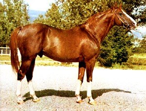
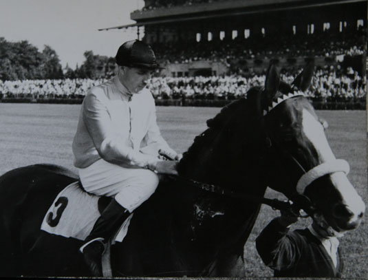
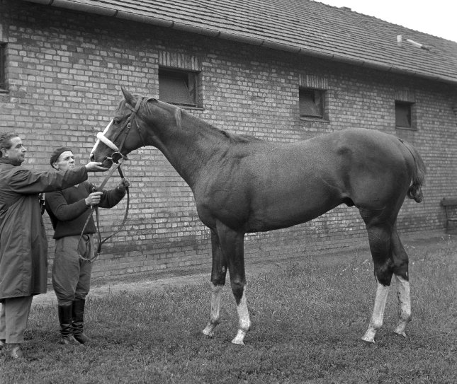

Kvíz Imperiálról

1. Mikor születt Imperiál?
1960. február 14-én született.
1970. január 4-én született.
2000 október 21.-én született.

2. Milyen fajta ló volt Imperiál?
Magyar sportló
Angol telivér
Mezőhegyesi félvér
3. Hány versenyt nyert meg Imperiál?
20-szor startolt, 12-szer nyert.
15-szor startolt, 15-szer nyert.
26-szor startolt, 21-szer nyert.

4. A szívét hol temették el?
Kerteskőn temették el.
Budapesten temették el.
Párizsban temették el.
5. Miben és mikor halt meg Imperiál?
Imperiált 1976-ban egy baleset következtében vesztette életét.
1990-ben halt meg végelgyengülésben.
Imperiált 1989-ben Kerteskőn 29 éves korában altatták el.